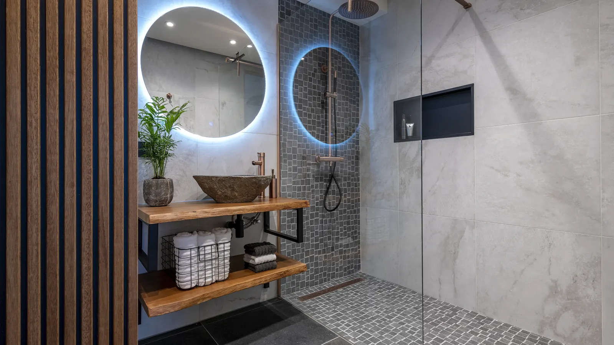
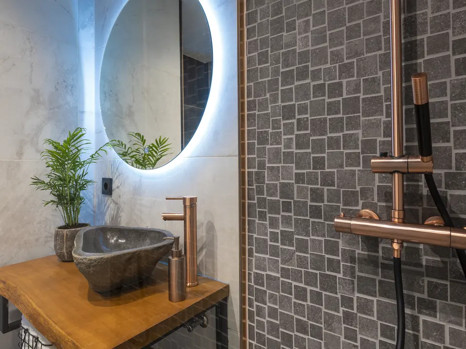
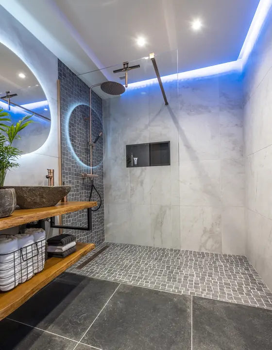
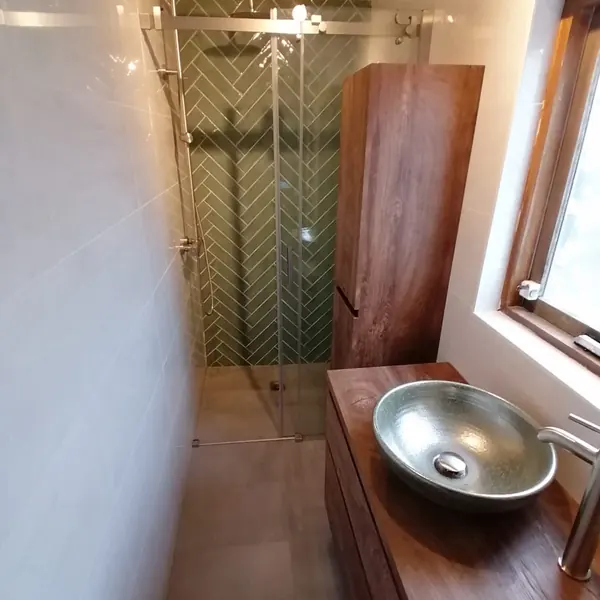
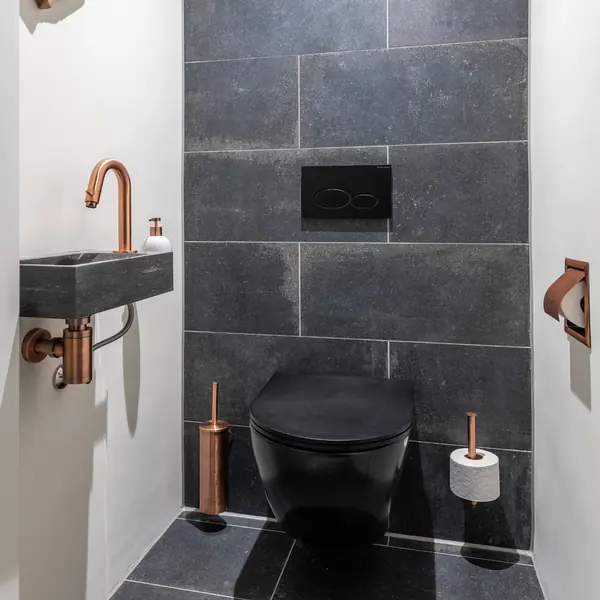
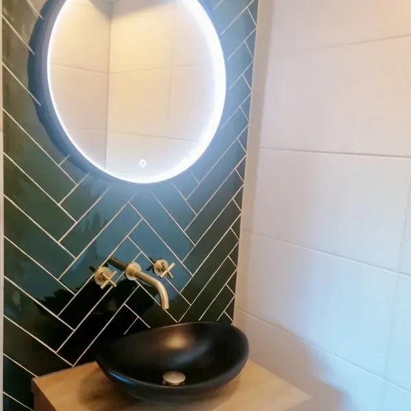
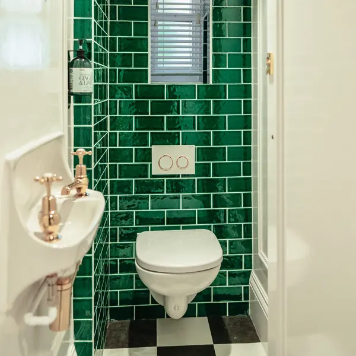
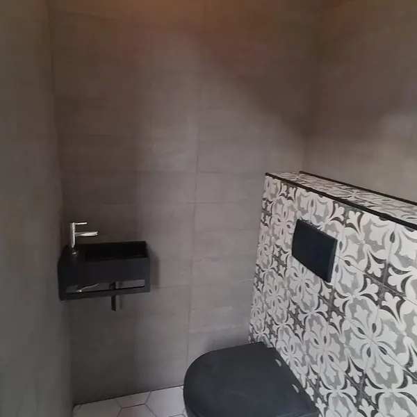
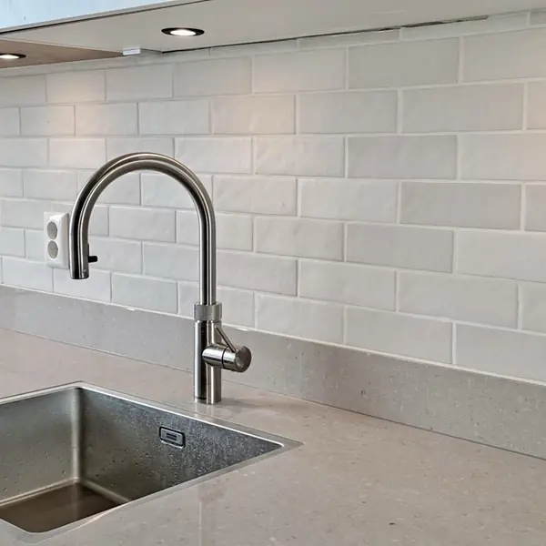

Badkamer, toilet en tegels
Complete badkamer- en toiletrenovaties en tegelwerk in alle soorten: natuursteen, mozaïek en keramisch.

Badkamers · Toiletten · Tegelwerk · Complete renovaties
Sloopwerk, wanden plaatsen, elektra verplaatsen, leidingen verleggen en alles op maat maken. Eén aannemer, sinds 2010.
Eigen werk van Axel, met de uitleg die hij er zelf bij schreef.


De hele ruimte is opnieuw ingedeeld: de wasruimte hoort nu bij de badkamer en de wc kreeg een eigen ruimte.






Zes diensten, in twee groepen.
Complete badkamer- en toiletrenovaties en tegelwerk in alle soorten: natuursteen, mozaïek en keramisch.

Complete renovaties van woningen en bedrijfsruimtes, oude panden en draagmuren, en kleinere klussen.
"Axel heeft onze kleine badkamer gerenoveerd.
We zijn heel blij met het resultaat.
Het plan wat betreft tegels kwam van Axel zelf en heeft hij fantastisch uitgevoerd.
Axel denkt mee in het proces en staat voor kwaliteit.
Daarnaast is hij een prettig persoon in de omgang.
Dus: “ Thanks again Axel, great job !! “"
"Axel heeft bij ons in de keuken (boven het aanrecht) het tegelwerk aangebracht op de wand. We zijn erg tevreden over het eindresultaat! Ook dacht hij mee en gaf hij ons tips. Daarnaast is het ook een hele aardige man :). Bedankt Axel!"
Vertel wat u wilt laten doen. Axel adviseert vrijblijvend.